Для подключения использована программа PuTTY. Настройки соединения:
kubsu-dev.ru58528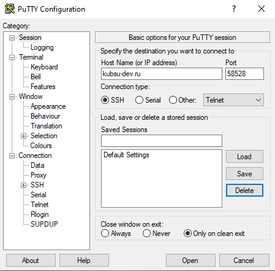
После ввода логина u82316 и пароля успешно установлено соединение. На скриншоте видно приветствие Ubuntu и приглашение командной строки.
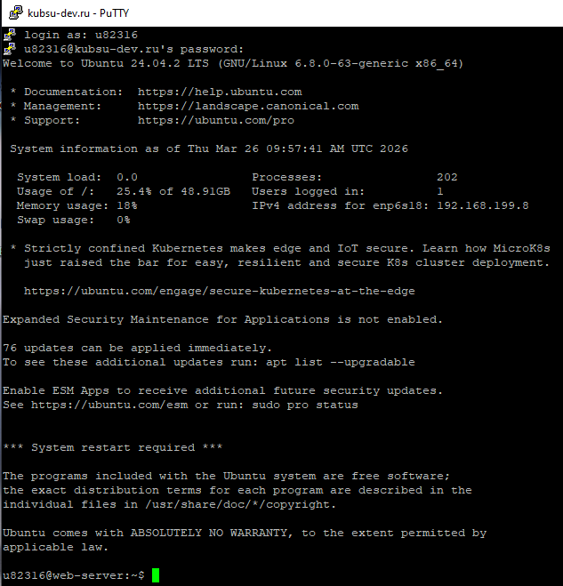
ping -c 7 kubsu.ru
Утилита ping отправляет ICMP-запросы для проверки доступности узла. В первой строке вывода указан IP-адрес сервера.
Результат: IP-адрес сервера kubsu.ru – 185.13.84.92. Все 7 пакетов доставлены, потерь нет, среднее время ответа – 0.952 мс.
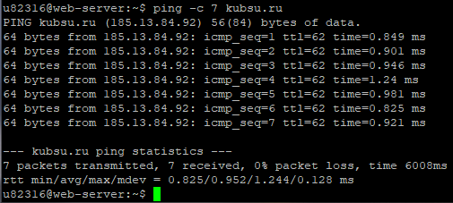
nslookup -type=A kubsu.ru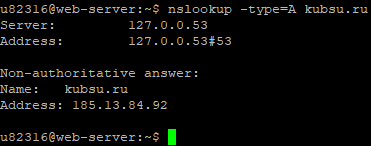
nslookup -type=MX kubsu.ruПочтовые серверы (с приоритетами):
mx2.kubannet.rumx.kubannet.rumx.kubsu.ru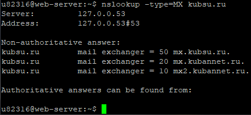
nslookup -type=A kubsu-dev.ru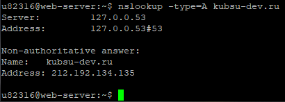
nslookup -type=MX kubsu-dev.ruДомен не имеет собственных почтовых серверов (ответ No answer). В авторитативном ответе указаны DNS-серверы:
nsl.nameself.comsupport.regtime.net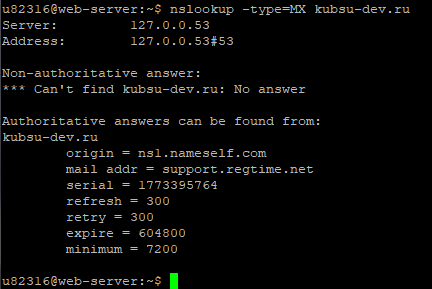
whois kubsu.ruДата регистрации: 1998-03-28T12:18:30Z (28 марта 1998 года).
Срок действия оплачен до 30 апреля 2026 года.
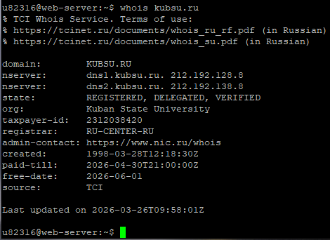
whois kubsu-dev.ruДата регистрации: 2020-02-12T15:55:06Z (12 февраля 2020 года).
Срок действия оплачен до 12 февраля 2027 года.
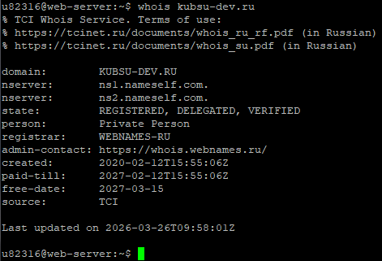
lab1 собраны все скриншоты, index.html и style.css.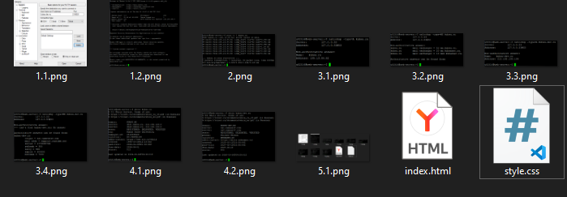
git init git add . git commit -m "first commit" git branch -M main git remote add origin https://github.com/Pavel180107/web-hwl.git git push -u origin main
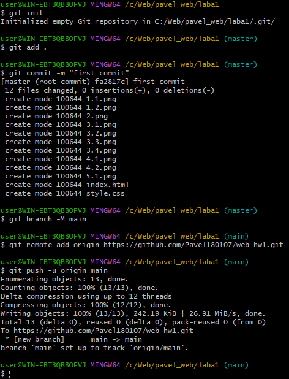
ssh-keygen -t ed25519 -C "2007_paul@mail.ru"
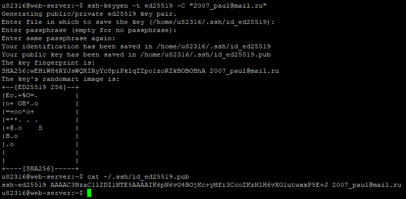
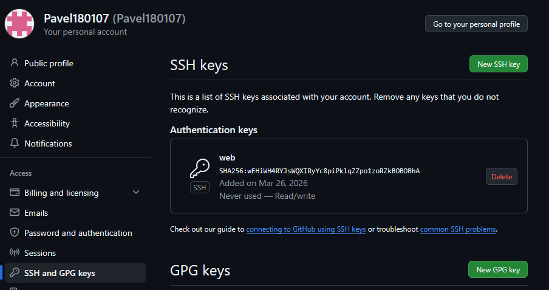
git clone git@github.com:Pavel180107/web-hwl.git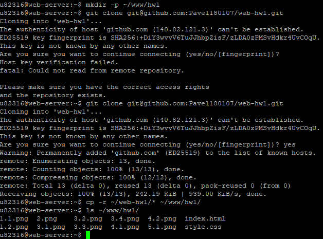
mkdir -p ~/www/hwl cp -r ~/web-hwl/* ~/www/hwl/
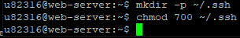
kubsu-dev.ru, порт 58528, логин u82316.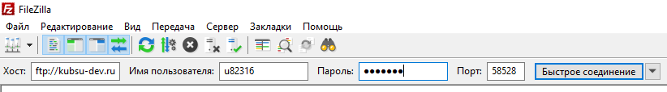
/home/u82316.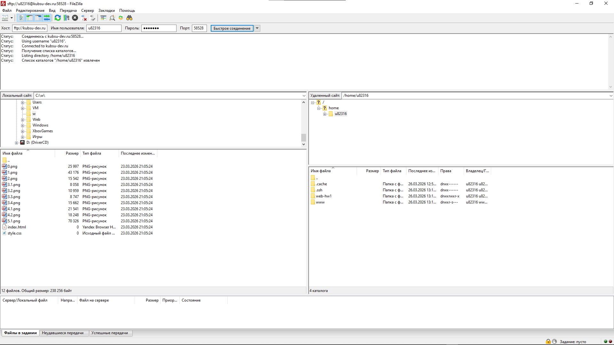
/home/u82316/www/hwl/ скопированы на локальный компьютер.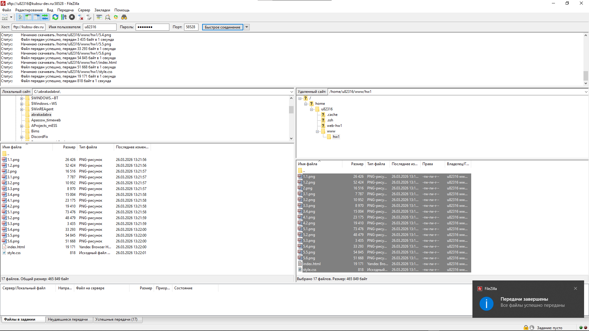
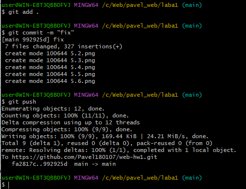
git pull и повторное копирование.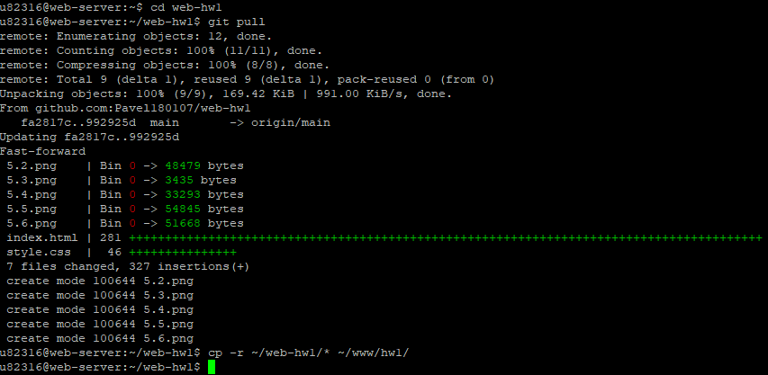